<!DOCTYPE html>
<html lang="en"><head>
<script src="../site_libs/clipboard/clipboard.min.js"></script>
<script src="../site_libs/quarto-html/tabby.min.js"></script>
<script src="../site_libs/quarto-html/popper.min.js"></script>
<script src="../site_libs/quarto-html/tippy.umd.min.js"></script>
<link href="../site_libs/quarto-html/tippy.css" rel="stylesheet">
<link href="../site_libs/quarto-html/light-border.css" rel="stylesheet">
<link href="../site_libs/quarto-html/quarto-syntax-highlighting-64a204ab8560d761af7679ceaba22944.css" rel="stylesheet" id="quarto-text-highlighting-styles"><meta charset="utf-8">
  <meta name="generator" content="quarto-1.10.18">

  <meta name="author" content="Felipe Melo">
  <title>Módulo 4: diversidade beta, dissimilaridade e partição da variação em comunidades</title>
  <meta name="apple-mobile-web-app-capable" content="yes">
  <meta name="apple-mobile-web-app-status-bar-style" content="black-translucent">
  <meta name="viewport" content="width=device-width, initial-scale=1.0, maximum-scale=1.0, user-scalable=no, minimal-ui">
  <link rel="stylesheet" href="../site_libs/revealjs/dist/reset.css">
  <link rel="stylesheet" href="../site_libs/revealjs/dist/reveal.css">
  <style>
    /* Default styles provided by pandoc.
    ** See https://pandoc.org/MANUAL.html#variables-for-html for config info.
    */
    span.smallcaps{font-variant: small-caps;}
    div.columns{display: flex; gap: 1.5em;}
    div.column{flex: auto;}
    @media screen {
    div.columns{gap: min(4vw, 1.5em);}
    div.column{overflow-x: auto;}
    }
    div.hanging-indent{margin-left: 1.5em; text-indent: -1.5em;}
    ul.task-list{list-style: none;}
    ul.task-list li input[type="checkbox"] {
      width: 0.8em;
      margin: 0 0.8em 0.2em -1em; /* quarto-specific, see https://github.com/quarto-dev/quarto-cli/issues/4556 */ 
      vertical-align: middle;
    }
  </style>
  <link rel="stylesheet" href="../site_libs/revealjs/dist/theme/quarto-2740581606dc327e82f18f789b69d8a0.css">
  <link href="../site_libs/revealjs/plugin/quarto-line-highlight/line-highlight.css" rel="stylesheet">
  <link href="../site_libs/revealjs/plugin/reveal-menu/menu.css" rel="stylesheet">
  <link href="../site_libs/revealjs/plugin/reveal-menu/quarto-menu.css" rel="stylesheet">
  <link href="../site_libs/revealjs/plugin/quarto-support/footer.css" rel="stylesheet">
  <style type="text/css">
    .reveal div.sourceCode {
      margin: 0;
      overflow: auto;
    }
    .reveal div.hanging-indent {
      margin-left: 1em;
      text-indent: -1em;
    }
    .reveal .slide:not(.center) {
      height: 100%;
    }
    .reveal .slide.scrollable {
      overflow-y: auto;
    }
    .reveal .footnotes {
      height: 100%;
      overflow-y: auto;
    }
    .reveal .slide .absolute {
      position: absolute;
      display: block;
    }
    .reveal .footnotes ol {
      counter-reset: ol;
      list-style-type: none; 
      margin-left: 0;
    }
    .reveal .footnotes ol li:before {
      counter-increment: ol;
      content: counter(ol) ". "; 
    }
    .reveal .footnotes ol li > p:first-child {
      display: inline-block;
    }
    .reveal .slide ul,
    .reveal .slide ol {
      margin-bottom: 0.5em;
    }
    .reveal .slide ul li,
    .reveal .slide ol li {
      margin-top: 0.4em;
      margin-bottom: 0.2em;
    }
    .reveal .slide ul[role="tablist"] li {
      margin-bottom: 0;
    }
    .reveal .slide ul li > *:first-child,
    .reveal .slide ol li > *:first-child {
      margin-block-start: 0;
    }
    .reveal .slide ul li > *:last-child,
    .reveal .slide ol li > *:last-child {
      margin-block-end: 0;
    }
    .reveal .slide .columns:nth-child(3) {
      margin-block-start: 0.8em;
    }
    .reveal blockquote {
      box-shadow: none;
    }
    .reveal .tippy-content>* {
      margin-top: 0.2em;
      margin-bottom: 0.7em;
    }
    .reveal .tippy-content>*:last-child {
      margin-bottom: 0.2em;
    }
    .reveal .slide > img.stretch.quarto-figure-center,
    .reveal .slide > img.r-stretch.quarto-figure-center {
      display: block;
      margin-left: auto;
      margin-right: auto; 
    }
    .reveal .slide > img.stretch.quarto-figure-left,
    .reveal .slide > img.r-stretch.quarto-figure-left  {
      display: block;
      margin-left: 0;
      margin-right: auto; 
    }
    .reveal .slide > img.stretch.quarto-figure-right,
    .reveal .slide > img.r-stretch.quarto-figure-right  {
      display: block;
      margin-left: auto;
      margin-right: 0; 
    }
  </style>
</head>
<body class="quarto-light">
  <div class="reveal">
    <div class="slides">

<section id="title-slide" class="quarto-title-block center">
  <h1 class="title">Módulo 4: diversidade beta, dissimilaridade e partição da variação em comunidades</h1>
  <p class="subtitle">análise da substituição de espécies</p>

<div class="quarto-title-authors">
<div class="quarto-title-author">
<div class="quarto-title-author-name">
Felipe Melo
</div>
</div>
</div>

  <p class="date">Invalid Date</p>
</section>
<section id="introdução-à-diversidade-beta" class="slide level2">
<h2>Introdução à diversidade beta</h2>
<div class="columns">
<div class="column" style="width:50%;">
<ul>
<li>diversidade beta (<span class="math inline">\(beta\)</span>) mede a variação na composição de espécies</li>
<li>conecta a riqueza local (<span class="math inline">\(alpha\)</span>) à diversidade regional (<span class="math inline">\(\gamma\)</span>).</li>
<li>essencial para identificar processos causais na montagem de comunidades.</li>
</ul>
</div><div class="column" style="width:50%;">
<p>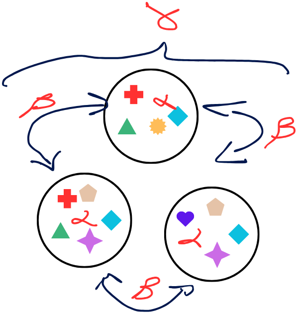</p>
</div></div>
</section>
<section id="section" class="slide level2">
<h2></h2>

</section>
<section id="section-1" class="slide level2">
<h2></h2>

</section>
<section id="section-2" class="slide level2">
<h2></h2>

</section>
<section id="section-3" class="slide level2">
<h2></h2>

</section>
<section id="section-4" class="slide level2">
<h2></h2>

</section>
<section id="partição-da-diversidade-multiplicativa-vs.-aditiva" class="slide level2">
<h2>Partição da diversidade: multiplicativa vs.&nbsp;aditiva</h2>
<div class="columns">
<div class="column" style="width:50%;">
<ul>
<li>partição multiplicativa: <span class="math inline">\(\beta_W = \frac{\gamma}{\bar{\alpha}}\)</span></li>
<li>partição aditiva:<span class="math inline">\(\gamma = \bar{\alpha} + \beta_A \implies \beta_A = \gamma - \bar{\alpha}\)</span></li>
<li>a partição aditiva mantém todas as componentes na mesma unidade física (número de espécies).</li>
<li>facilita a comparação entre escalas espaciais hierárquicas.</li>
</ul>
</div><div class="column" style="width:50%;">
<p></p>
</div></div>
</section>
<section id="jaccard-e-sørensen-presaus" class="slide level2">
<h2>Jaccard e Sørensen (pres/aus)</h2>
<div class="columns">
<div class="column" style="width:50%;">
<ul>
<li>baseados no número de espécies compartilhadas (<span class="math inline">\(a\)</span>) e exclusivas (<span class="math inline">\(b, c\)</span>).</li>
<li>dissimilaridade de Jaccard: <span class="math inline">\(Jac = (b + c) / (a + b + c)\)</span></li>
<li>dissimilaridade de Sørensen: <span class="math inline">\(Sor = (b + c) / (2a + b + c)\)</span>.</li>
</ul>
</div><div class="column" style="width:50%;">
<p></p>
</div></div>
</section>
<section id="section-5" class="slide level2">
<h2></h2>
</section>
<section id="dissimilaridade-de-bray-curtis-para-dados-quantitativos" class="slide level2">
<h2>5. dissimilaridade de bray-curtis para dados quantitativos</h2>
<div class="columns">
<div class="column" style="width:50%;">
<ul>
<li>incorpora a abundância relativa ou biomassa de cada espécie.</li>
<li>fórmula: <span class="math inline">\(D_{BC} = rac{\sum |y_{ik} - y_{jk}|}{\sum (y_{ik} + y_{jk})}\)</span>.</li>
<li>sensível a mudanças na dominância ecológica, mesmo quando as espécies são as mesmas.</li>
<li>o índice quantitativo mais utilizado na literatura ecológica internacional.</li>
</ul>
</div><div class="column" style="width:50%;">
<div class="cell">
<div class="cell-output-display">
<div>
<figure>
<p>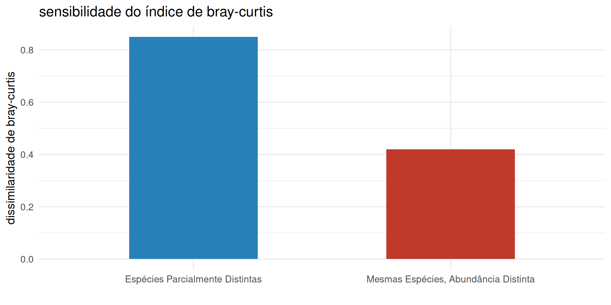</p>
</figure>
</div>
</div>
</div>
</div></div>
</section>
<section id="decomposição-da-diversidade-beta-turnover-vs.-aninhamento" class="slide level2">
<h2>6. decomposição da diversidade beta: turnover vs.&nbsp;aninhamento</h2>
<div class="columns">
<div class="column" style="width:50%;">
<ul>
<li>a dissimilaridade total pode ser gerada por dois processos biológicos distintos.</li>
<li>substituição (<em>turnover</em>): troca de espécies entre locais por restrição de nicho/ambiente.</li>
<li>aninhamento (<em>nestedness</em>): comunidades mais pobres são subconjuntos estritos das comunidades mais ricas.</li>
<li>partição de baselga: <span class="math inline">\(eta_{sor} = eta_{sim} + eta_{nes}\)</span>.</li>
</ul>
</div><div class="column" style="width:50%;">
<div class="cell">
<div class="cell-output-display">
<div>
<figure>
<p>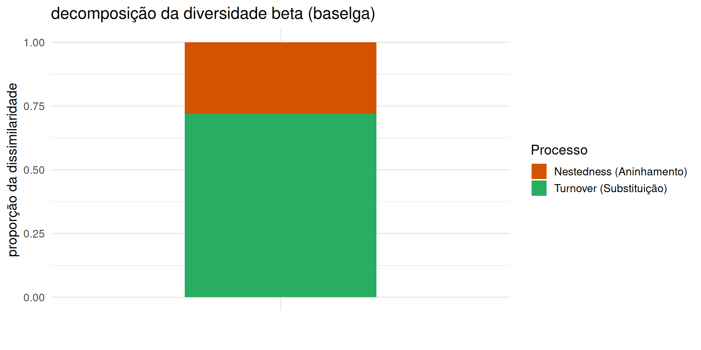</p>
</figure>
</div>
</div>
</div>
</div></div>
</section>
<section id="implicações-da-partição-da-diversidade-beta-para-conservação" class="slide level2">
<h2>7. implicações da partição da diversidade beta para conservação</h2>
<div class="columns">
<div class="column" style="width:50%;">
<ul>
<li>se a diversidade beta for dominada por turnover:
<ul>
<li>alta substituição espacial de espécies.</li>
<li>estratégia: proteger múltiplos fragmentos ao longo de todo o gradiente.</li>
</ul></li>
<li>se for dominada por aninhamento:
<ul>
<li>perda sequencial de espécies.</li>
<li>estratégia: focar recursos na proteção do maior e mais rico fragmento.</li>
</ul></li>
</ul>
</div><div class="column" style="width:50%;">
<div class="cell">
<div class="cell-output-display">
<div>
<figure>
<p>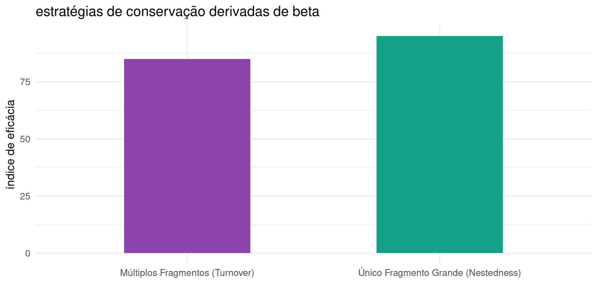</p>
</figure>
</div>
</div>
</div>
</div></div>
</section>
<section id="introdução-às-técnicas-de-ordenação-multidimensional" class="slide level2">
<h2>8. introdução às técnicas de ordenação multidimensional</h2>
<div class="columns">
<div class="column" style="width:50%;">
<ul>
<li>reduzem a complexidade de matrizes de alta dimensionalidade (muitas espécies).</li>
<li>projetam os locais em um espaço gráfico bidimensional contínuo.</li>
<li>locais representados próximos no gráfico possuem composição ecológica semelhante.</li>
<li>locais distantes possuem composição altamente dissimilar.</li>
</ul>
</div><div class="column" style="width:50%;">
<div class="cell">
<div class="cell-output-display">
<div>
<figure>
<p>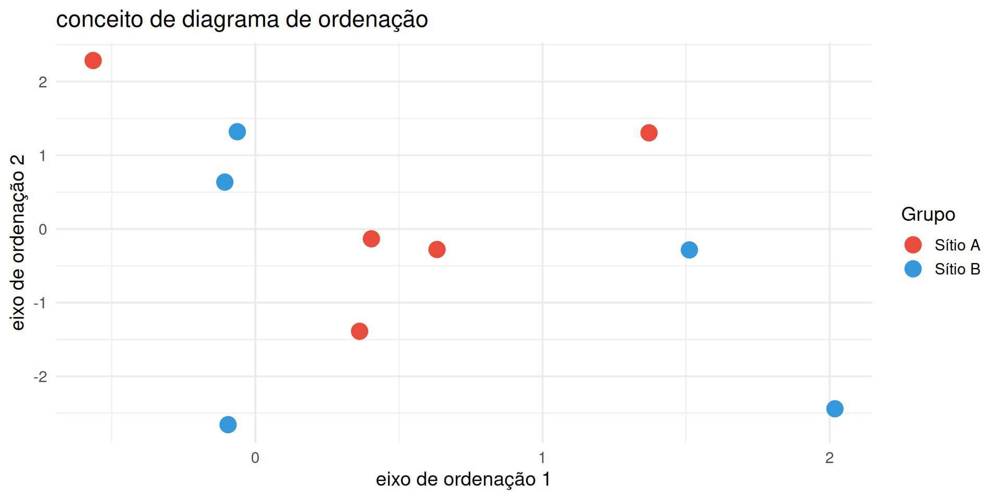</p>
</figure>
</div>
</div>
</div>
</div></div>
</section>
<section id="escalonamento-multidimensional-não-métrico-nmds" class="slide level2">
<h2>9. escalonamento multidimensional não-métrico (NMDS)</h2>
<div class="columns">
<div class="column" style="width:50%;">
<ul>
<li>a técnica de ordenação mais popular e robusta para dados biológicos não-normais.</li>
<li>preserva o ranqueamento das distâncias ecológicas entre pares de amostras.</li>
<li>não assume relações lineares entre abundâncias e variáveis ambientais.</li>
<li>implementado no R pela função <code>metaMDS()</code> do pacote <code>vegan</code>.</li>
</ul>
</div><div class="column" style="width:50%;">
<div class="cell">
<div class="cell-output-display">
<div>
<figure>
<p>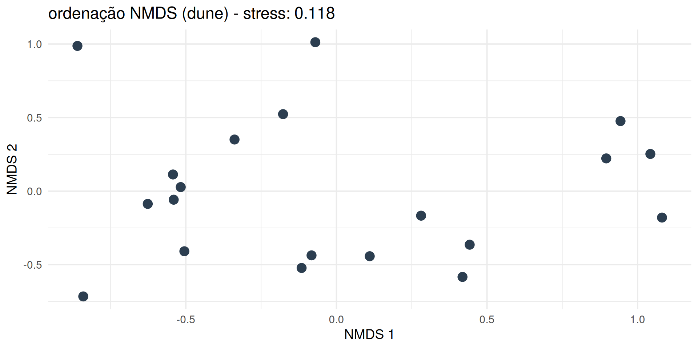</p>
</figure>
</div>
</div>
</div>
</div></div>
</section>
<section id="interpretando-o-valor-de-stress-no-nmds" class="slide level2">
<h2>10. interpretando o valor de stress no NMDS</h2>
<div class="columns">
<div class="column" style="width:50%;">
<ul>
<li>o stress quantifica o desacordo entre as distâncias reais e as distâncias no gráfico.</li>
<li>stress <span class="math inline">\(&lt; 0,05\)</span>: excelente representação bidimensional.</li>
<li>stress <span class="math inline">\(&lt; 0,10\)</span>: boa representação; conclusões muito confiáveis.</li>
<li>stress <span class="math inline">\(&lt; 0,20\)</span>: razoável; aceitável para dados ecológicos complexos.</li>
<li>stress <span class="math inline">\(&gt; 0,20\)</span>: representação não confiável (aumentar eixos para <span class="math inline">\(k=3\)</span>).</li>
</ul>
</div><div class="column" style="width:50%;">
<div class="cell">
<div class="cell-output-display">
<div>
<figure>
<p>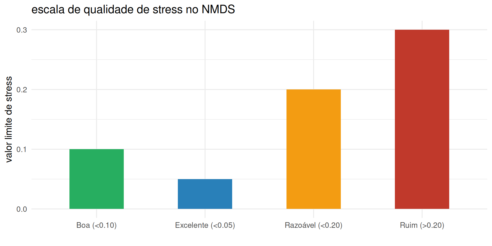</p>
</figure>
</div>
</div>
</div>
</div></div>
</section>
<section id="análise-de-coordenadas-principais-pcoa" class="slide level2">
<h2>11. análise de coordenadas principais (PCoA)</h2>
<div class="columns">
<div class="column" style="width:50%;">
<ul>
<li>ordenação métrica que projeta a matriz de dissimilaridade em espaço euclidiano.</li>
<li>permite calcular a porcentagem exata da variância explicada por cada eixo.</li>
<li>flexível: funciona com qualquer matriz de distância (bray-curtis, jaccard, gower).</li>
<li>implementado via <code>cmdscale()</code> ou <code>wcmdscale()</code> no pacote <code>vegan</code>.</li>
</ul>
</div><div class="column" style="width:50%;">
<div class="cell">
<div class="cell-output-display">
<div>
<figure>
<p>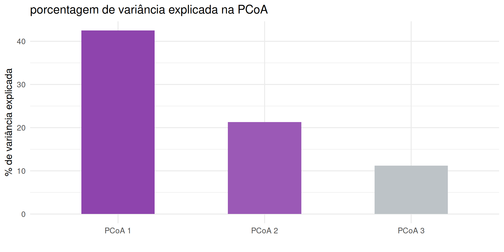</p>
</figure>
</div>
</div>
</div>
</div></div>
</section>
<section id="agrupamento-hierárquico-cluster-analysis-e-dendrogramas" class="slide level2">
<h2>12. agrupamento hierárquico (cluster analysis) e dendrogramas</h2>
<div class="columns">
<div class="column" style="width:50%;">
<ul>
<li>agrupa amostras em uma estrutura hierárquica em árvore (dendrograma).</li>
<li>métodos de ligação: UPGMA (média das distâncias) e ward (mínima variância).</li>
<li>excelente para identificar grupos discretos de comunidades e ecótonos.</li>
<li>complementa as ordenações contínuas (NMDS/PCoA).</li>
</ul>
</div><div class="column" style="width:50%;">
<div class="cell">
<div class="cell-output-display">
<div>
<figure>
<p>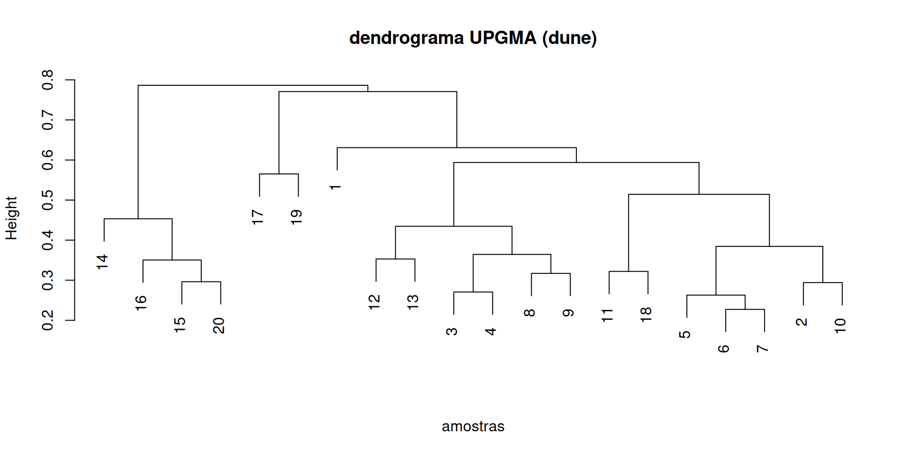</p>
</figure>
</div>
</div>
</div>
</div></div>
</section>
<section id="teste-de-hipóteses-multivariado-permanova-adonis2" class="slide level2">
<h2>13. teste de hipóteses multivariado: PERMANOVA (adonis2)</h2>
<div class="columns">
<div class="column" style="width:50%;">
<ul>
<li>Permutational Multivariate Analysis of Variance (PERMANOVA).</li>
<li>testa se a composição de espécies difere entre fatores ou tratamentos.</li>
<li>estatística pseudo-<span class="math inline">\(F\)</span> avaliada por permutações aleatórias (<span class="math inline">\(n = 999\)</span>).</li>
<li>não assume normalidade multivariada; extremamente robusto.</li>
</ul>
</div><div class="column" style="width:50%;">
<div class="cell">
<div class="cell-output-display">
<div>
<figure>
<p>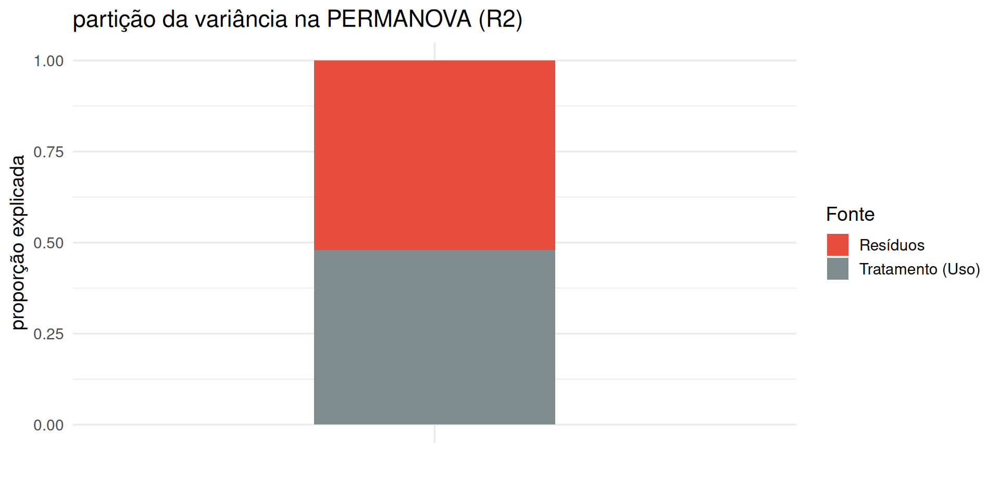</p>
</figure>
</div>
</div>
</div>
</div></div>
</section>
<section id="verificando-premissas-homogeneidade-de-dispersão-betadisper" class="slide level2">
<h2>14. verificando premissas: homogeneidade de dispersão (betadisper)</h2>
<div class="columns">
<div class="column" style="width:50%;">
<ul>
<li>uma PERMANOVA significativa pode ser causada por mudança no centroide OU por variância desigual.</li>
<li>a função <code>betadisper()</code> testa se a distância média das amostras ao centroide é igual entre grupos.</li>
<li>análogo multivariado do teste de levene para homogeneidade de variâncias.</li>
<li>etapa obrigatória para garantir rigor nas conclusões da PERMANOVA.</li>
</ul>
</div><div class="column" style="width:50%;">
<div class="cell">
<div class="cell-output-display">
<div>
<figure>
<p>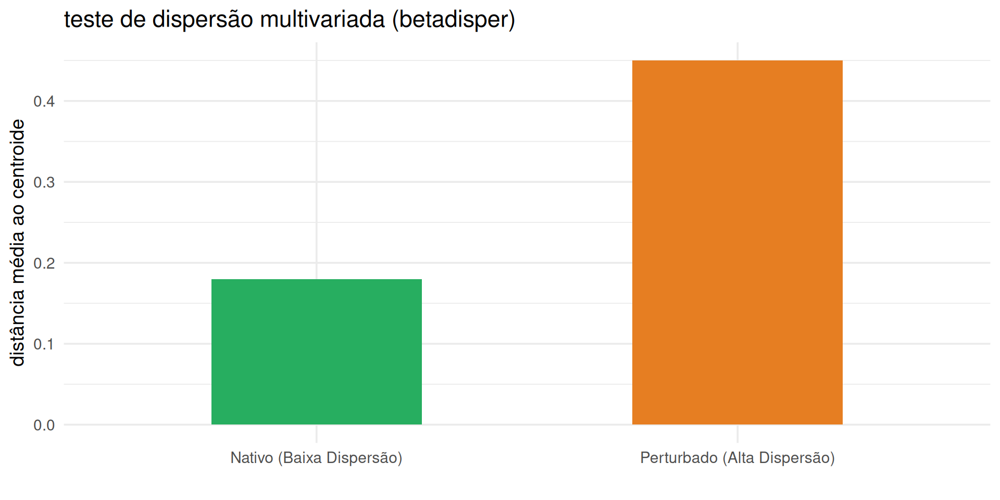</p>
</figure>
</div>
</div>
</div>
</div></div>
</section>
<section id="o-modelo-prático-de-lego-para-a-diversidade-beta" class="slide level2">
<h2>15. o modelo prático de LEGO para a diversidade beta</h2>
<div class="columns">
<div class="column" style="width:50%;">
<ul>
<li>os 4 sacos de LEGO representam comunidades submetidas a diferentes forças de montagem.</li>
<li>saco A: comunidade degradada/hiperdominante.</li>
<li>saco B: comunidade nativa equilibrada.</li>
<li>saco C: comunidade artificialmente uniforme.</li>
<li>saco D: comunidade heterogênea com espécies raras.</li>
</ul>
</div><div class="column" style="width:50%;">
<div class="cell">
<div class="cell-output-display">
<div>
<figure>
<p>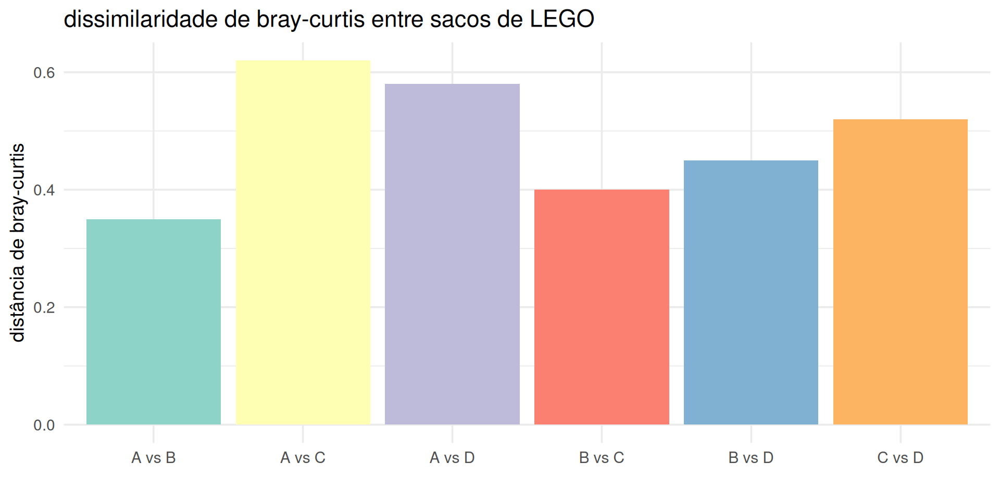</p>
</figure>
</div>
</div>
</div>
</div></div>
</section>
<section id="ordenação-por-nmds-dos-sacos-de-lego-no-r" class="slide level2">
<h2>16. ordenação por NMDS dos sacos de LEGO no R</h2>
<div class="columns">
<div class="column" style="width:50%;">
<ul>
<li>aplicação de <code>metaMDS()</code> na matriz dos 4 sacos de LEGO.</li>
<li>o gráfico visualiza a posição relativa de cada saco no espaço multidimensional.</li>
<li>o saco A (hiperdominante) e o saco D (muitas raras) ocupam extremos opostos no NMDS.</li>
<li>permite testar visualmente a dissimilaridade das comunidades amostradas.</li>
</ul>
</div><div class="column" style="width:50%;">
<div class="cell">
<div class="cell-output-display">
<div>
<figure>
<p>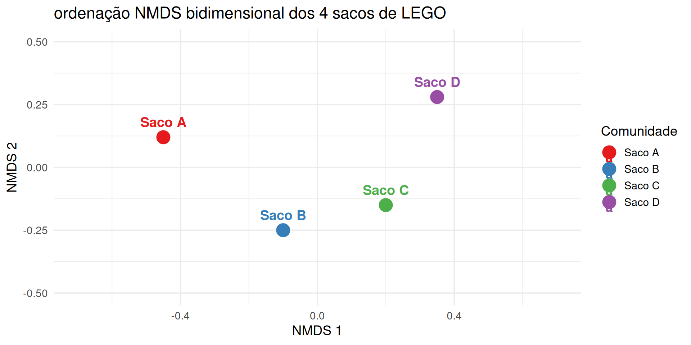</p>
</figure>
</div>
</div>
</div>
</div></div>
</section>
<section id="dendrograma-de-similaridade-dos-sacos-de-lego" class="slide level2">
<h2>17. dendrograma de similaridade dos sacos de LEGO</h2>
<div class="columns">
<div class="column" style="width:50%;">
<ul>
<li>agrupamento hierárquico UPGMA aplicado às distâncias de bray-curtis.</li>
<li>revela a formação de clades ecológicos entre os sacos de LEGO.</li>
<li>ajuda a identificar quais comunidades possuem composição mais afim.</li>
<li>valida os padrões observados na ordenação do NMDS.</li>
</ul>
</div><div class="column" style="width:50%;">
<div class="cell">
<div class="cell-output-display">
<div>
<figure>
<p>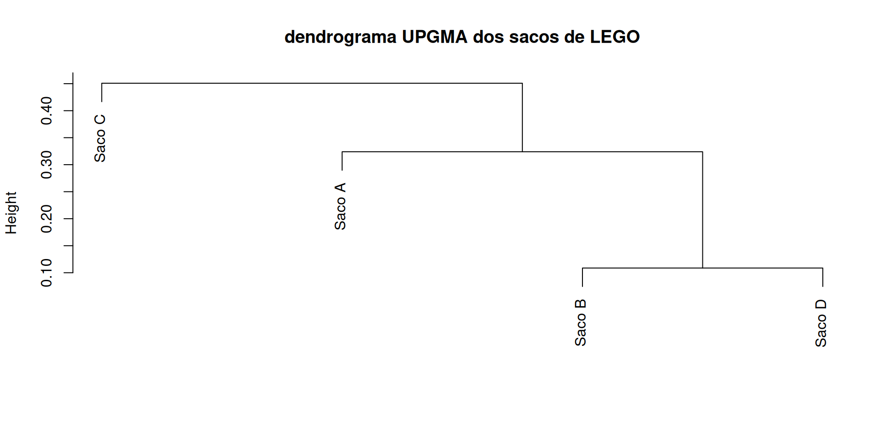</p>
</figure>
</div>
</div>
</div>
</div></div>
</section>
<section id="script-essencial-no-r-com-o-pacote-vegan" class="slide level2">
<h2>18. script essencial no R com o pacote vegan</h2>
<div class="columns">
<div class="column" style="width:50%;">
<ul>
<li><code>vegdist(mat, method = "bray")</code>: calcula a matriz de dissimilaridade.</li>
<li><code>metaMDS(mat, distance = "bray")</code>: executa a ordenação por NMDS.</li>
<li><code>adonis2(mat ~ tratamento, data = env)</code>: executa a PERMANOVA.</li>
<li><code>betadisper(dist, tratamento)</code>: avalia a homogeneidade de dispersões.</li>
</ul>
</div><div class="column" style="width:50%;">
<div class="cell">
<div class="cell-output-display">
<div>
<figure>
<p>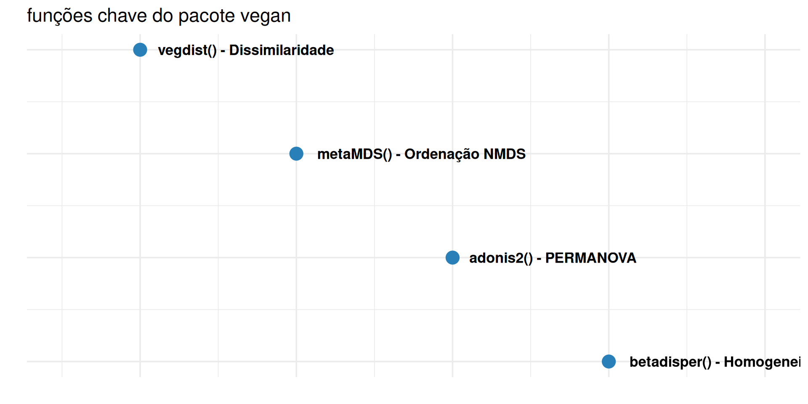</p>
</figure>
</div>
</div>
</div>
</div></div>
</section>
<section id="protocolo-de-amostragem-em-grupo-para-o-módulo-4" class="slide level2">
<h2>19. protocolo de amostragem em grupo para o módulo 4</h2>
<div class="columns">
<div class="column" style="width:50%;">
<ul>
<li>cada grupo usará a sua planilha do Módulo 1 contendo as contagens de peças.</li>
<li>compilar as planilhas de todos os grupos de sala em uma única matriz multivariada.</li>
<li>calcular a matriz de bray-curtis entre as comunidades dos diferentes grupos.</li>
<li>gerar a ordenação por NMDS e o dendrograma para mapear a diversidade beta da turma.</li>
</ul>
</div><div class="column" style="width:50%;">
<div class="cell">
<div class="cell-output-display">
<div>
<figure>
<p>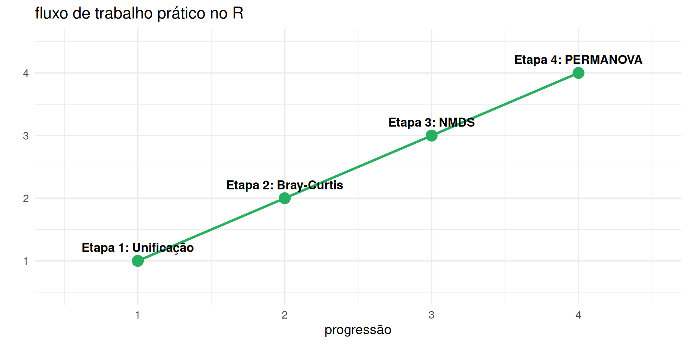</p>
</figure>
</div>
</div>
</div>
</div></div>
</section>
<section id="síntese-do-módulo-4-e-conclusões" class="slide level2">
<h2>20. síntese do módulo 4 e conclusões</h2>
<div class="columns">
<div class="column" style="width:50%;">
<ul>
<li>a diversidade beta desvenda os padrões de substituição e estruturação no espaço.</li>
<li>a partição em turnover e aninhamento orienta decisões estratégicas de conservação.</li>
<li>a ordenação por NMDS e a PERMANOVA são ferramentas indispensáveis do ecólogo moderno.</li>
<li>a integração da diversidade alfa (módulos 1-3) e beta (módulo 4) completa o diagnóstico da comunidade.</li>
</ul>
</div><div class="column" style="width:50%;">
<div class="cell">
<div class="cell-output-display">
<div>
<figure>
<p>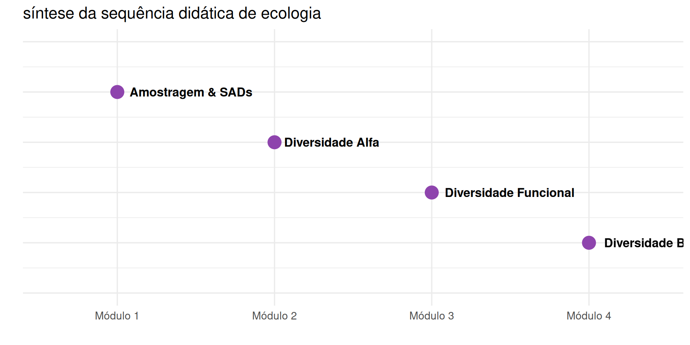</p>
</figure>
</div>
</div>
</div>
</div></div>


</section>
    </div>
  <div class="quarto-auto-generated-content" style="display: none;">
<div class="footer footer-default">

</div>
</div></div>

  <script>window.backupDefine = window.define; window.define = undefined;</script>
  <script src="../site_libs/revealjs/dist/reveal.js"></script>
  <!-- reveal.js plugins -->
  <script src="../site_libs/revealjs/plugin/quarto-line-highlight/line-highlight.js"></script>
  <script src="../site_libs/revealjs/plugin/pdf-export/pdfexport.js"></script>
  <script src="../site_libs/revealjs/plugin/reveal-menu/menu.js"></script>
  <script src="../site_libs/revealjs/plugin/reveal-menu/quarto-menu.js"></script>
  <script src="../site_libs/revealjs/plugin/quarto-support/support.js"></script>
  

  <script src="../site_libs/revealjs/plugin/notes/notes.js"></script>
  <script src="../site_libs/revealjs/plugin/search/search.js"></script>
  <script src="../site_libs/revealjs/plugin/zoom/zoom.js"></script>
  <script src="../site_libs/revealjs/plugin/math/math.js"></script>
  <script>window.define = window.backupDefine; window.backupDefine = undefined;</script>

  <script>

      // Full list of configuration options available at:
      // https://revealjs.com/config/
      Reveal.initialize({
'controlsAuto': true,
'previewLinksAuto': false,
'pdfSeparateFragments': false,
'autoAnimateEasing': "ease",
'autoAnimateDuration': 1,
'autoAnimateUnmatched': true,
'jumpToSlide': true,
'menu': {"side":"left","useTextContentForMissingTitles":true,"markers":false,"loadIcons":false,"custom":[{"title":"Tools","icon":"<i class=\"fas fa-gear\"></i>","content":"<ul class=\"slide-menu-items\">\n<li class=\"slide-tool-item active\" data-item=\"0\"><a href=\"#\" onclick=\"RevealMenuToolHandlers.fullscreen(event)\"><kbd>f</kbd> Fullscreen</a></li>\n<li class=\"slide-tool-item\" data-item=\"1\"><a href=\"#\" onclick=\"RevealMenuToolHandlers.speakerMode(event)\"><kbd>s</kbd> Speaker View</a></li>\n<li class=\"slide-tool-item\" data-item=\"2\"><a href=\"#\" onclick=\"RevealMenuToolHandlers.overview(event)\"><kbd>o</kbd> Slide Overview</a></li>\n<li class=\"slide-tool-item\" data-item=\"3\"><a href=\"#\" onclick=\"RevealMenuToolHandlers.togglePdfExport(event)\"><kbd>e</kbd> PDF Export Mode</a></li>\n<li class=\"slide-tool-item\" data-item=\"4\"><a href=\"#\" onclick=\"RevealMenuToolHandlers.toggleScrollView(event)\"><kbd>r</kbd> Scroll View Mode</a></li>\n<li class=\"slide-tool-item\" data-item=\"5\"><a href=\"#\" onclick=\"RevealMenuToolHandlers.keyboardHelp(event)\"><kbd>?</kbd> Keyboard Help</a></li>\n</ul>"}],"openButton":true},
'smaller': false,
 
        // Display controls in the bottom right corner
        controls: false,

        // Help the user learn the controls by providing hints, for example by
        // bouncing the down arrow when they first encounter a vertical slide
        controlsTutorial: false,

        // Determines where controls appear, "edges" or "bottom-right"
        controlsLayout: 'edges',

        // Visibility rule for backwards navigation arrows; "faded", "hidden"
        // or "visible"
        controlsBackArrows: 'faded',

        // Display a presentation progress bar
        progress: true,

        // Display the page number of the current slide
        slideNumber: 'c/t',

        // 'all', 'print', or 'speaker'
        showSlideNumber: 'all',

        // Add the current slide number to the URL hash so that reloading the
        // page/copying the URL will return you to the same slide
        hash: true,

        // Start with 1 for the hash rather than 0
        hashOneBasedIndex: false,

        // Flags if we should monitor the hash and change slides accordingly
        respondToHashChanges: true,

        // Push each slide change to the browser history
        history: true,

        // Enable keyboard shortcuts for navigation
        keyboard: true,

        // Enable the slide overview mode
        overview: true,

        // Disables the default reveal.js slide layout (scaling and centering)
        // so that you can use custom CSS layout
        disableLayout: false,

        // Vertical centering of slides
        center: false,

        // Enables touch navigation on devices with touch input
        touch: true,

        // Loop the presentation
        loop: false,

        // Change the presentation direction to be RTL
        rtl: false,

        // see https://revealjs.com/vertical-slides/#navigation-mode
        navigationMode: 'linear',

        // Randomizes the order of slides each time the presentation loads
        shuffle: false,

        // Turns fragments on and off globally
        fragments: true,

        // Flags whether to include the current fragment in the URL,
        // so that reloading brings you to the same fragment position
        fragmentInURL: false,

        // Flags if the presentation is running in an embedded mode,
        // i.e. contained within a limited portion of the screen
        embedded: false,

        // Flags if we should show a help overlay when the questionmark
        // key is pressed
        help: true,

        // Flags if it should be possible to pause the presentation (blackout)
        pause: true,

        // Flags if speaker notes should be visible to all viewers
        showNotes: false,

        // Global override for autoplaying embedded media (null/true/false)
        autoPlayMedia: null,

        // Global override for preloading lazy-loaded iframes (null/true/false)
        preloadIframes: null,

        // Number of milliseconds between automatically proceeding to the
        // next slide, disabled when set to 0, this value can be overwritten
        // by using a data-autoslide attribute on your slides
        autoSlide: 0,

        // Stop auto-sliding after user input
        autoSlideStoppable: true,

        // Use this method for navigation when auto-sliding
        autoSlideMethod: null,

        // Specify the average time in seconds that you think you will spend
        // presenting each slide. This is used to show a pacing timer in the
        // speaker view
        defaultTiming: null,

        // Enable slide navigation via mouse wheel
        mouseWheel: false,

        // The display mode that will be used to show slides
        display: 'block',

        // Hide cursor if inactive
        hideInactiveCursor: true,

        // Time before the cursor is hidden (in ms)
        hideCursorTime: 5000,

        // Opens links in an iframe preview overlay
        previewLinks: false,

        // Transition style (none/fade/slide/convex/concave/zoom)
        transition: 'fade',

        // Transition speed (default/fast/slow)
        transitionSpeed: 'default',

        // Transition style for full page slide backgrounds
        // (none/fade/slide/convex/concave/zoom)
        backgroundTransition: 'none',

        // Number of slides away from the current that are visible
        viewDistance: 3,

        // Number of slides away from the current that are visible on mobile
        // devices. It is advisable to set this to a lower number than
        // viewDistance in order to save resources.
        mobileViewDistance: 2,

        // The "normal" size of the presentation, aspect ratio will be preserved
        // when the presentation is scaled to fit different resolutions. Can be
        // specified using percentage units.
        width: 1280,

        height: 720,

        // Factor of the display size that should remain empty around the content
        margin: 0.1,

        math: {
          mathjax: 'https://cdn.jsdelivr.net/npm/mathjax@2.7.9/MathJax.js',
          config: 'TeX-AMS_HTML-full',
          tex2jax: {
            inlineMath: [['\\(','\\)']],
            displayMath: [['\\[','\\]']],
            balanceBraces: true,
            processEscapes: false,
            processRefs: true,
            processEnvironments: true,
            preview: 'TeX',
            skipTags: ['script','noscript','style','textarea','pre','code'],
            ignoreClass: 'tex2jax_ignore',
            processClass: 'tex2jax_process'
          },
        },

        // reveal.js plugins
        plugins: [QuartoLineHighlight, PdfExport, RevealMenu, QuartoSupport,

          RevealMath,
          RevealNotes,
          RevealSearch,
          RevealZoom
        ]
      });
    </script>
    
    <script>
      // htmlwidgets need to know to resize themselves when slides are shown/hidden.
      // Fire the "slideenter" event (handled by htmlwidgets.js) when the current
      // slide changes (different for each slide format).
      (function () {
        // dispatch for htmlwidgets
        function fireSlideEnter() {
          const event = window.document.createEvent("Event");
          event.initEvent("slideenter", true, true);
          window.document.dispatchEvent(event);
        }

        function fireSlideChanged(previousSlide, currentSlide) {
          fireSlideEnter();

          // dispatch for shiny
          if (window.jQuery) {
            if (previousSlide) {
              window.jQuery(previousSlide).trigger("hidden");
            }
            if (currentSlide) {
              window.jQuery(currentSlide).trigger("shown");
            }
          }
        }

        // hookup for slidy
        if (window.w3c_slidy) {
          window.w3c_slidy.add_observer(function (slide_num) {
            // slide_num starts at position 1
            fireSlideChanged(null, w3c_slidy.slides[slide_num - 1]);
          });
        }

      })();
    </script>

    <script id="quarto-html-after-body" type="application/javascript">
      window.document.addEventListener("DOMContentLoaded", function (event) {
        const tabsets =  window.document.querySelectorAll(".panel-tabset-tabby")
        tabsets.forEach(function(tabset) {
          const tabby = new Tabby('#' + tabset.id);
        });
        const isCodeAnnotation = (el) => {
          for (const clz of el.classList) {
            if (clz.startsWith('code-annotation-')) {                     
              return true;
            }
          }
          return false;
        }
        const onCopySuccess = function(e) {
          // button target
          const button = e.trigger;
          // don't keep focus
          button.blur();
          // flash "checked"
          button.classList.add('code-copy-button-checked');
          var currentTitle = button.getAttribute("title");
          button.setAttribute("title", "Copied!");
          let tooltip;
          if (window.bootstrap) {
            button.setAttribute("data-bs-toggle", "tooltip");
            button.setAttribute("data-bs-placement", "left");
            button.setAttribute("data-bs-title", "Copied!");
            tooltip = new bootstrap.Tooltip(button, 
              { trigger: "manual", 
                customClass: "code-copy-button-tooltip",
                offset: [0, -8]});
            tooltip.show();    
          }
          setTimeout(function() {
            if (tooltip) {
              tooltip.hide();
              button.removeAttribute("data-bs-title");
              button.removeAttribute("data-bs-toggle");
              button.removeAttribute("data-bs-placement");
            }
            button.setAttribute("title", currentTitle);
            button.classList.remove('code-copy-button-checked');
          }, 1000);
          // clear code selection
          e.clearSelection();
        }
        const getTextToCopy = function(trigger) {
          const outerScaffold = trigger.parentElement.cloneNode(true);
          const codeEl = outerScaffold.querySelector('code');
          for (const childEl of codeEl.children) {
            if (isCodeAnnotation(childEl)) {
              childEl.remove();
            }
          }
          return codeEl.innerText;
        }
        const clipboard = new window.ClipboardJS('.code-copy-button:not([data-in-quarto-modal])', {
          text: getTextToCopy
        });
        clipboard.on('success', onCopySuccess);
        if (window.document.getElementById('quarto-embedded-source-code-modal')) {
          const clipboardModal = new window.ClipboardJS('.code-copy-button[data-in-quarto-modal]', {
            text: getTextToCopy,
            container: window.document.getElementById('quarto-embedded-source-code-modal')
          });
          clipboardModal.on('success', onCopySuccess);
        }
          var localhostRegex = new RegExp(/^(?:http|https):\/\/localhost\:?[0-9]*\//);
          var mailtoRegex = new RegExp(/^mailto:/);
            var filterRegex = new RegExp('/' + window.location.host + '/');
          var isInternal = (href) => {
              return filterRegex.test(href) || localhostRegex.test(href) || mailtoRegex.test(href);
          }
          // Inspect non-navigation links and adorn them if external
         var links = window.document.querySelectorAll('a[href]:not(.nav-link):not(.navbar-brand):not(.toc-action):not(.sidebar-link):not(.sidebar-item-toggle):not(.pagination-link):not(.no-external):not([aria-hidden]):not(.dropdown-item):not(.quarto-navigation-tool):not(.about-link)');
          for (var i=0; i<links.length; i++) {
            const link = links[i];
            if (!isInternal(link.href)) {
              // undo the damage that might have been done by quarto-nav.js in the case of
              // links that we want to consider external
              if (link.dataset.originalHref !== undefined) {
                link.href = link.dataset.originalHref;
              }
            }
          }
        function tippyHover(el, contentFn, onTriggerFn, onUntriggerFn) {
          const config = {
            allowHTML: true,
            maxWidth: 500,
            delay: 100,
            arrow: false,
            appendTo: function(el) {
                return el.closest('section.slide') || el.parentElement;
            },
            interactive: true,
            interactiveBorder: 10,
            theme: 'light-border',
            placement: 'bottom-start',
          };
          if (contentFn) {
            config.content = contentFn;
          }
          if (onTriggerFn) {
            config.onTrigger = onTriggerFn;
          }
          if (onUntriggerFn) {
            config.onUntrigger = onUntriggerFn;
          }
            config['offset'] = [0,0];
            config['maxWidth'] = 700;
          window.tippy(el, config); 
        }
        const noterefs = window.document.querySelectorAll('a[role="doc-noteref"]');
        for (var i=0; i<noterefs.length; i++) {
          const ref = noterefs[i];
          tippyHover(ref, function() {
            // use id or data attribute instead here
            let href = ref.getAttribute('data-footnote-href') || ref.getAttribute('href');
            try { href = new URL(href).hash; } catch {}
            const id = href.replace(/^#\/?/, "");
            const note = window.document.getElementById(id);
            if (note) {
              return note.innerHTML;
            } else {
              return "";
            }
          });
        }
        const findCites = (el) => {
          const parentEl = el.parentElement;
          if (parentEl) {
            const cites = parentEl.dataset.cites;
            if (cites) {
              return {
                el,
                cites: cites.split(' ')
              };
            } else {
              return findCites(el.parentElement)
            }
          } else {
            return undefined;
          }
        };
        var bibliorefs = window.document.querySelectorAll('a[role="doc-biblioref"]');
        for (var i=0; i<bibliorefs.length; i++) {
          const ref = bibliorefs[i];
          const citeInfo = findCites(ref);
          if (citeInfo) {
            tippyHover(citeInfo.el, function() {
              var popup = window.document.createElement('div');
              citeInfo.cites.forEach(function(cite) {
                var citeDiv = window.document.createElement('div');
                citeDiv.classList.add('hanging-indent');
                citeDiv.classList.add('csl-entry');
                var biblioDiv = window.document.getElementById('ref-' + cite);
                if (biblioDiv) {
                  citeDiv.innerHTML = biblioDiv.innerHTML;
                }
                popup.appendChild(citeDiv);
              });
              return popup.innerHTML;
            });
          }
        }
      });
      </script>
    

</body></html>